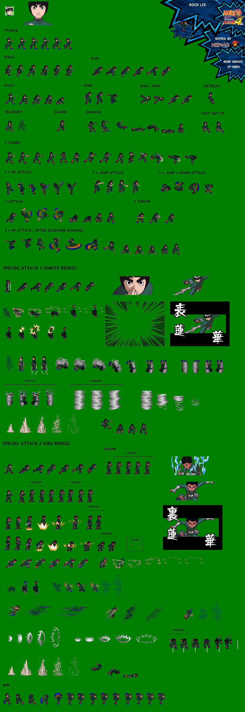
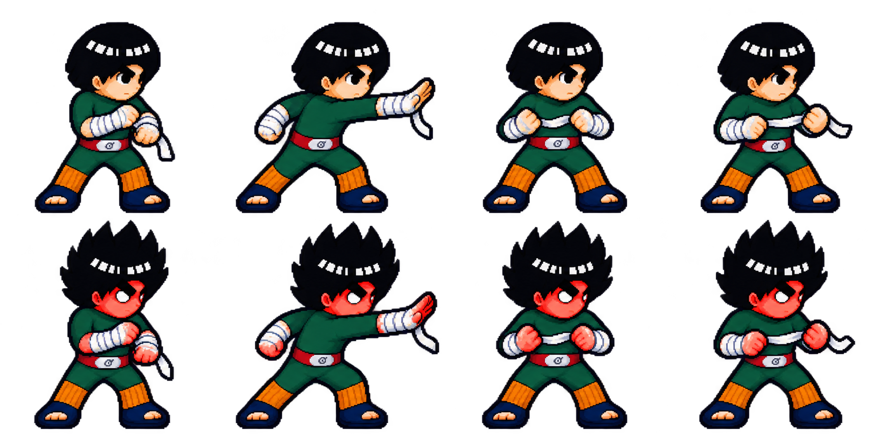

從手腕鬆開、向前拋出、雙手收緊開始。布條有寬度、扭面與短尾，繞到敵人背後，再從身體前方壓回；落地前剝離。以下都是實際遊戲畫面，不是概念圖。
角色維持同一個蓄勢姿態，繃帶像附加在身體前的圖示。
鬆布到拉緊是連續過程，敵人臉部保持可讀。

只研究鬆布、纏繞、旋轉、釋放的動作語法，不接入遊戲，也不當作生成圖的像素輸入。

舊 common／skills 圖集沒有獨立鬆腕、甩布、收布序列，因此另做原創動作與對應開門外觀。保留原來的上踢、蜷身與落地畫格。
查核、原畫格索引、材質與生命週期決策 · 使用者指定的原始來源庫